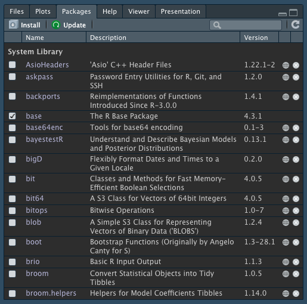
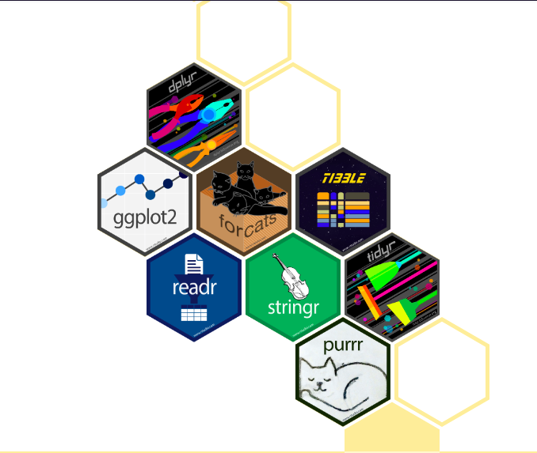
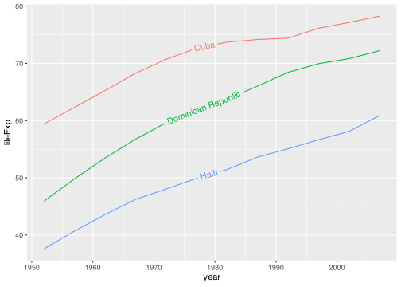
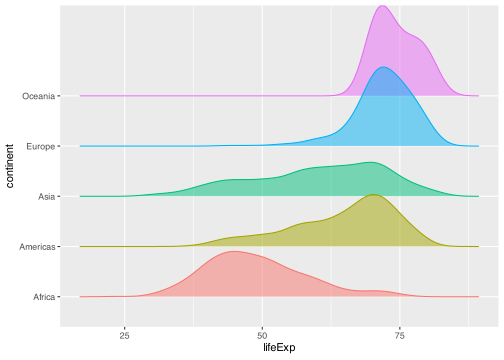
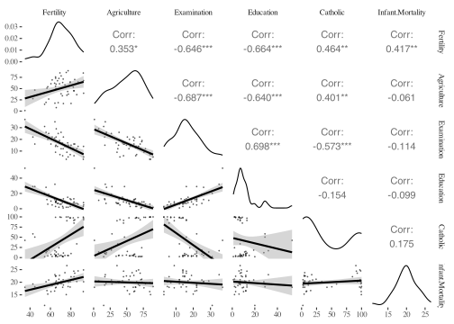
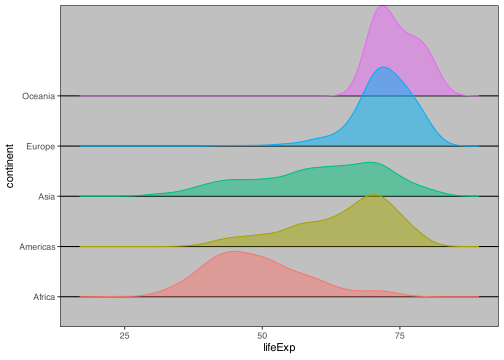
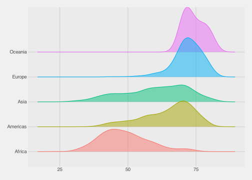
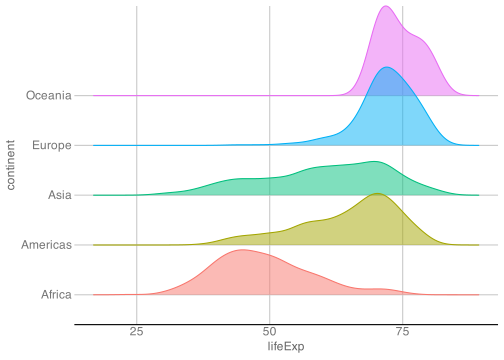
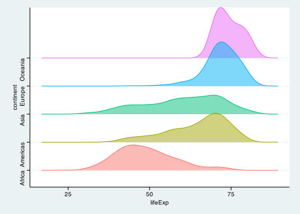

We mainly work with three types of files in this class:
.qmd1: These are markdownsyntax files, where you write code and prose to make documents.
.R: These are Rsyntax files, where you write code to process and analyze data without making an output document2.
.html (or .pdf): These are the output documents created when you Render a quarto markdown document.
. . .
Make sure you understand the difference between the uses of these file types! Please ask for clarification if needed!
Introducing the tidyverse
Packages
Last week we discussed Base R and the fact that what makes R extremely powerful and flexible is the large number of diverse user-created packages.
. . .
What are packages again?
Recall that packages are simply collections of functions and tools others have already created, that will make your life easier!
. . .
The package 2-step
Remember that to install a new package you use install.packages("package_name") in the console. You only need to do this once per machine (unless you want to update to a newer version of a package).
To load a package into your current session of R you use library(package_name), preferably at the beginning of your R script or Quarto document. Every time you open RStudio it’s a new session and you’ll have to call library() on the packages you want to use.
Packages
The Packages tab in the bottom-right pane of RStudio lists your installed packages.

The tidyverse
The tidyverse refers to two things:
a specific package in R that loads several core packages within the tidyverse.
a specific design philosophy, grammar, and focus on “tidy” data structures developed by Hadley Wickham3 and his team at RStudio (now named Posit).
The tidyverse package
The core packages within the tidyverse include:
ggplot2 (visualizations)
dplyr (data manipulation)
tidyr (data reshaping)
readr (data import/export)
purrr (iteration)
tibble (modern dataframe)
stringr (text data)
forcats (factors)

The tidyverse philosophy
The principles underlying the tidyverse are:
Reuse existing data structures.
Compose simple functions with the pipe.
Embrace functional programming.
Design for humans.
Gapminder Data
We’ll be working with data from Hans Rosling’s Gapminder project. An excerpt of these data can be accessed through an R package called gapminder4.
. . .
In the console: install.packages("gapminder")
. . .
Then load the gapminder package as well as the tidyverse package:
library(gapminder)library(tidyverse)
── Attaching core tidyverse packages ──────────────────────── tidyverse 2.0.0 ──
✔ dplyr 1.1.3 ✔ readr 2.1.4
✔ forcats 1.0.0 ✔ stringr 1.5.0
✔ ggplot2 3.4.3 ✔ tibble 3.2.1
✔ lubridate 1.9.3 ✔ tidyr 1.3.0
✔ purrr 1.0.2
── Conflicts ────────────────────────────────────────── tidyverse_conflicts() ──
✖ dplyr::filter() masks stats::filter()
✖ dplyr::lag() masks stats::lag()
ℹ Use the conflicted package (<http://conflicted.r-lib.org/>) to force all conflicts to become errors
Check Out Gapminder
The data frame we will work with is called gapminder, available once you have loaded the package. Let’s see its structure:
ggplot graphics objects consist of two primary components:
. . .
Layers, the components of a graph.
We add layers to a ggplot object using +.
This includes adding lines, shapes, and text to a plot.
. . .
Aesthetics, which determine how the layers appear.
We set aesthetics using arguments (e.g. color = "red") inside layer functions.
This includes modifying locations, colors, and sizes of the layers.
Aesthetic Vignette
Learn more about all possible aesthetic mappings here.
Layers
Layers are the components of the graph, such as:
ggplot(): initializes basic plotting object, specifies input data
geom_point(): layer of scatterplot points
geom_line(): layer of lines
geom_histogram(): layer of a histogram
labs (or to specify individually: ggtitle(), xlab(), ylab()): layers of labels
facet_wrap(): layer creating multiple plot panels
theme_bw(): layer replacing default gray background with black-and-white
. . .
Layers are separated by a + sign. For clarity, I usually put each layer on a new line.
Syntax Warning
Be sure to end each line with the +. The code will not run if a new line begins with a +.
Aesthetics
Aesthetics control the appearance of the layers:
x, y: \(x\) and \(y\) coordinate values to use
color: set color of elements based on some data value
group: describe which points are conceptually grouped together for the plot (often used with lines)
size: set size of points/lines based on some data value (greater than 0)
alpha: set transparency based on some data value (between 0 and 1)
Mapping data inside aes() vs. creating plot-wise settings outside aes()
When aesthetic arguments are called within aes() they specify a variable of the data and therefore map said value of the data by that aesthetic. Called outside aes(), these are only settings that can be given a specific value but will not display a dimension of the data.
ggplot(data = [dataset], mapping =aes(x = [x-variable], y = [y-variable])) +geom_xxx() + other options
ggplot(data = [dataset]) +geom_xxx(mapping =aes(x = [x-variable], y = [y-variable])) + other options
ggplot() +geom_xxx(data = [dataset], mapping =aes(x = [x-variable], y = [y-variable])) + other options
Example: Basic Jargon in Action!
Axis Labels, Points, No Background
Base ggplot
ggplot(data = China, aes(x = year, y = lifeExp))
Initialize the plot with ggplot() and x and y aesthetics mapped to variables. These aesthetics will be accessible to any future layers since they’re in the primary layer.
Axis Labels, Points, No Background
Scatterplot
ggplot(data = China, aes(x = year, y = lifeExp)) +geom_point()
gapminder_sub <- gapminder |>filter(year %in%c(1952, 1982, 2002)) # create subset with only 3 yearsscales_plot <-ggplot(data = gapminder_sub, aes(x = lifeExp, y = gdpPercap, fill = continent)) +geom_jitter(alpha =0.5, # alpha of points halfway transparentpch =21, # shape is a circle with fillsize =3, # increase sizecolor ="black") +# outline of circle is black scale_fill_viridis_d(option ="D") +# circle is filled by colors perceptable for various forms of color-blindnessfacet_grid(rows =vars(year), # facet by years in the rowcols =vars(continent)) +# facet by continent in the columns ggthemes::theme_tufte(base_size =20) # increase base text sizescales_plot
Code
scales_plot +scale_y_log10(breaks =c(250, 1000, 10000, 50000, 115000)) # transform the y axis to the logarithm to gain better visualization
Code
scales_plot +scale_y_log10(breaks =c(250, 1000, 10000, 50000, 115000)) +facet_grid(rows =vars(year), cols =vars(continent), scales ="free_x") # make the x axis vary by data
Code
scales_plot +scale_y_log10(breaks =c(250, 1000, 10000, 50000, 115000)) +facet_grid(rows =vars(year), cols =vars(continent), scales ="free_y") # make the y axis vary by data
Code
scales_plot +scale_y_log10(breaks =c(250, 1000, 10000, 50000, 115000)) +facet_grid(rows =vars(year), cols =vars(continent), scales ="free") # make both axes vary by data
Using multiple geoms
ggplot(gapminder, aes(x = continent, y = lifeExp)) +geom_boxplot(outlier.colour ="hotpink")
Facets allow us to gain a clearer understanding of the regional patterns. We want to differentiate the continent-average line from the country-specific lines though so let’s change it’s color.
Color Scale
Hmm, can’t quite see the blue line yet. Let’s make it bigger?
ggplot2 can obviously do a lot on its own. But because R allows for anyone and everyone to expand the functionality of what already exists, numerous extensions5. to ggplot2 have been created.
. . .
We’ve already seen one example with ggrepel. But let’s look at a few others…
geomtextpath
If you want your labels to follow along the path of your plot (and maintain proper angles and spacing) try using geomtextpath.
Code
# install.packages("geomtextpath") <- run in console firstlibrary(geomtextpath)gapminder |>filter(country %in%c("Cuba", "Haiti", "Dominican Republic")) |># restricting data to 3 regionally-specific countriesggplot(aes(x = year, y = lifeExp, color = country, label = country)) +# specify label with text to appeargeom_textpath() +# adding textpath geom to put labels within linestheme(legend.position ="none") # removing legend

ggridges
We can make visualize the differing distributions of a continuous variable by levels of a categorical variable with ggridges!
Code
# install.packages("ggridges") <- run in console firstlibrary(ggridges)ggplot(gapminder, aes(x = lifeExp, y = continent, fill = continent, color = continent)) +geom_density_ridges(alpha =0.5, show.legend =FALSE) # add ridges, make all a bit transparent, remove legend

Correlation Matricies
Make visually appealing & informative correlation plots in GGally or ggcorrplot.
# install.packages("GGally") <- run in console firstlibrary(GGally)ggcorr(swiss, geom ="circle", min_size =25, # specify minimum size of shape max_size =25, # specify maximum size of shape label =TRUE, # label circles with correlation coefficientlabel_alpha =TRUE, # less strong correlations have lower alphalabel_round =2, # round correlations coefficients to 2 decimal pointslegend.position =c(0.15, 0.6), legend.size =12)
Code
# install.packages("ggcorrplot") <- run in console firstlibrary(ggcorrplot)# compute correlation matrixcorr <-round(cor(swiss), 1)# computer matrix of correlation p-valuesp_mat <-cor_pmat(swiss)ggcorrplot(corr,hc.order =TRUE, # use hierarchical clustering to group like-correlations togethertype ="lower", # only show lower half of correlation matrixp.mat = p_mat, # give corresponding p-values for correlation matrixinsig ="pch", # add default shape (an X) to correlations that are insignificantoutline.color ="black", # outline cells in whiteggtheme = ggthemes::theme_tufte(), # using a specific theme I like from ggthemes package colors =c("#4e79a7", "white", "#e15759")) +# specify custom colors theme(legend.position =c(0.15, 0.67))
Code
ggpairs(swiss, lower =list(continuous =wrap("smooth", # specify a smoothing line added to scatterplotsalpha =0.5, size=0.2))) + ggthemes::theme_tufte() # add nice theme from ggthemes

patchwork
Combine separate plots into the same graphic using patchwork.
Code
# install.packages("patchwork") <- run in console firstlibrary(patchwork)# Create first plot objectplot_lifeExp <-ggplot(gapminder, aes(x = lifeExp, y = continent, fill = continent, color = continent)) +geom_density_ridges(alpha =0.5, show.legend =FALSE)# Create second plot objectplot_boxplot <-ggplot(gapminder, aes(x = continent, y = lifeExp, color = continent), alpha =0.5) +geom_boxplot(outlier.colour ="black", varwidth =TRUE) +# change outlier color and make width of boxes relative to Ncoord_flip() +# flip the coordinates (x & y) to align with first plotgeom_jitter(position =position_jitter(width =0.1, height =0), # add datapoints to boxplotalpha =0.25) +geom_label_repel(data = outliers, # add new dataset with just 4 of the outliersaes(label = country), color ="black") +theme(axis.text.y =element_blank(), # remove y axis text axis.ticks.y =element_blank(), # remove y axis ticks axis.title.y =element_blank(), # remove y axis title legend.position ="none")plot_lifeExp + plot_boxplot # simply add two objects together to place side by side
These are just a handful of all the ready-made theme options available out there. Some other packages that might be useful/fun to check out:
hrbrthemes - provides typography-centric themes and theme components for ggplot2
urbnthemesa set of tools for creating Urban Institute-themed plots and maps in R
bbplot - provides helpful functions for creating and exporting graphics made in ggplot in the style used by the BBC News data team
ggpomological - A ggplot2 theme based on the USDA Pomological Watercolor Collection
. . .
You are also able to design your own theme using the theme() function and really getting into the weeds with how to specify all the non-data ink in your plot. Once you come up with a theme you like you can save it as an object (i.e. my_theme) and add it to any ggplot you create to maintain your own unique and consistent style.
Summary
Summary
ggplot2 can do a LOT! I won’t expect you to memorize all these tools, and neither should you! With time and practice, you’ll start to remember the key tools.
When in doubt, Google it! (i.e. “R ggplot ‘whatever issue you need help with’”)
Kieran Healy’s book Data Visualization: A Practical Introduction (right) is targeted at social scientists without technical backgrounds and uses the same tools we’ll be learning in this class.
Lab 2
Make a histogram
In pairs, create a histogram of life expectancy observations in the complete Gapminder dataset.
Set the base layer by specifying the data as gapminder and the x variable as lifeExp
Add a second layer to create a histogram using the function geom_histogram()
Customize your plot with nice axis labels and a title.
Add the color “salmon” to the entire plot (hint: use the fill argument, not color).
Change this fill setting to an aesthetic and map continent onto it.
Change the geom to geom_freqpoly. What happened and how might you fix it?
Setting the bins aesthetic tells ggplot how many values to bin by (lower is more fine-grained, higher is less descriptive).
Solution: 3. Add Label Layers
ggplot(gapminder, aes(x = lifeExp)) +geom_histogram(bins =30) +xlab("Life Expectancy") +ylab("Count") +ggtitle("Histogram of Life Expectancy in Gapminder Data")
Solution: 4. Add fill setting
ggplot(gapminder, aes(x = lifeExp)) +geom_histogram(bins =30, fill ="salmon") +xlab("Life Expectancy") +ylab("Count") +ggtitle("Histogram of Life Expectancy in Gapminder Data")

Solution: 5. Add fill aesthetic
ggplot(gapminder, aes(x = lifeExp, fill = continent)) +geom_histogram(bins =30) +xlab("Life Expectancy") +ylab("Count") +ggtitle("Histogram of Life Expectancy in Gapminder Data")
Solution: 6. Change geometry
ggplot(gapminder, aes(x = lifeExp, fill = continent)) +geom_freqpoly(bins =30) +xlab("Life Expectancy") +ylab("Count") +ggtitle("Histogram of Life Expectancy in Gapminder Data")
Solution: 6. Change geometry
ggplot(gapminder, aes(x = lifeExp, color = continent)) +geom_freqpoly(bins =30) +xlab("Life Expectancy") +ylab("Count") +ggtitle("Histogram of Life Expectancy in Gapminder Data")

Solution: 7. Add facets
ggplot(gapminder, aes(x = lifeExp, color = continent)) +geom_freqpoly(bins =30) +facet_wrap(vars(continent), ncol =1) +xlab("Life Expectancy") +ylab("Count") +ggtitle("Histogram of Life Expectancy in Gapminder Data")

Solution: 8. Add nicer theme
ggplot(gapminder, aes(x = lifeExp, color = continent)) +geom_freqpoly(bins =30) +facet_wrap(vars(continent), ncol =1) +xlab("Life Expectancy") +ylab("Count") +ggtitle("Histogram of Life Expectancy in Gapminder Data") +theme_minimal()

Solution: 9. Remove legend
ggplot(gapminder, aes(x = lifeExp, color = continent)) +geom_freqpoly(bins =30) +facet_wrap(vars(continent), ncol =1) +xlab("Life Expectancy") +ylab("Count") +ggtitle("Histogram of Life Expectancy in Gapminder Data") +theme_minimal() +theme(legend.position ="none")
Homework
Homework #2
In this homework, you’ll pose a question regarding the Gapminder dataset and investigate it graphically.
At the beginning of your document, write down a research question that is based on the Gapminder dataset (e.g., “How does population change over time in different countries?”)
Create 3-6 plots to answer/investigate your research question. Consider histograms (geom_histogram()), scatterplots (geom_point()), or lineplots (geom_line()).
Be sure all titles, axes, and legends are clearly labelled (no raw variable names).
Include at least one plot with facet_wrap() or facet_grid().
You can use other geoms like bar charts, box plots, add meaningful vertical or horizontal lines, etc. You may find this data visualization cheat sheet helpful.
Your document should be pleasant for a peer to look at, with some organization. You must write up your observations in words as well as showing the graphs. Upload both the .qmd file and the .html file to Canvas.
Due dates
#
Section AA
Section AB
Homework Due
Peer Review Due
Homework Due
Peer Review Due
1
10 October
15 October
12 October
17 October
2
17 October
22 October
19 October
24 October
3
24 October
29 October
26 October
31 October
4
31 October
5 November
2 November
7 November
5
7 November
12 November
9 November
14 November
6
14 November
19 November
16 November
21 November
7
21 November
26 November
23 November
28 November
8
28 November
3 November
30 November
5 November
9
5 December
10 December
7 December
12 December
Footnotes
Quarto builds on a decade of developments with R Markdown documents. .Rmd files operate very similarly to Quarto documents but there are minor differences that you can read more about here.↩︎
While beyond the scope of this class, you can use the source() function to run a .R script file inside a .qmd or .R file. Using this you can break a large project up into multiple files but still run it all at once!↩︎